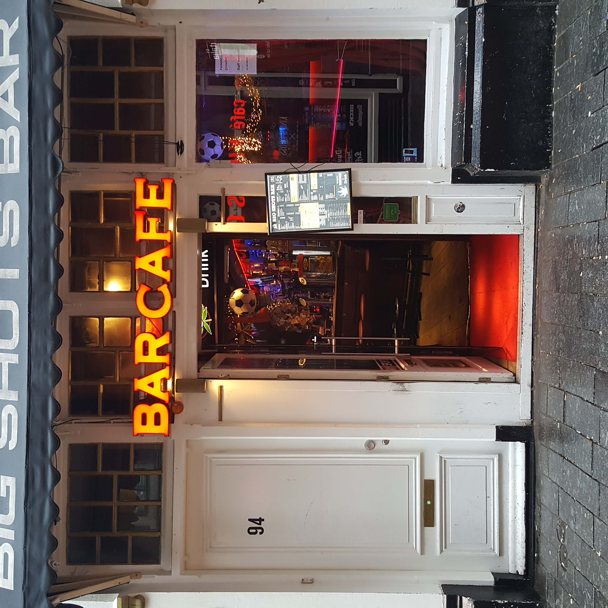
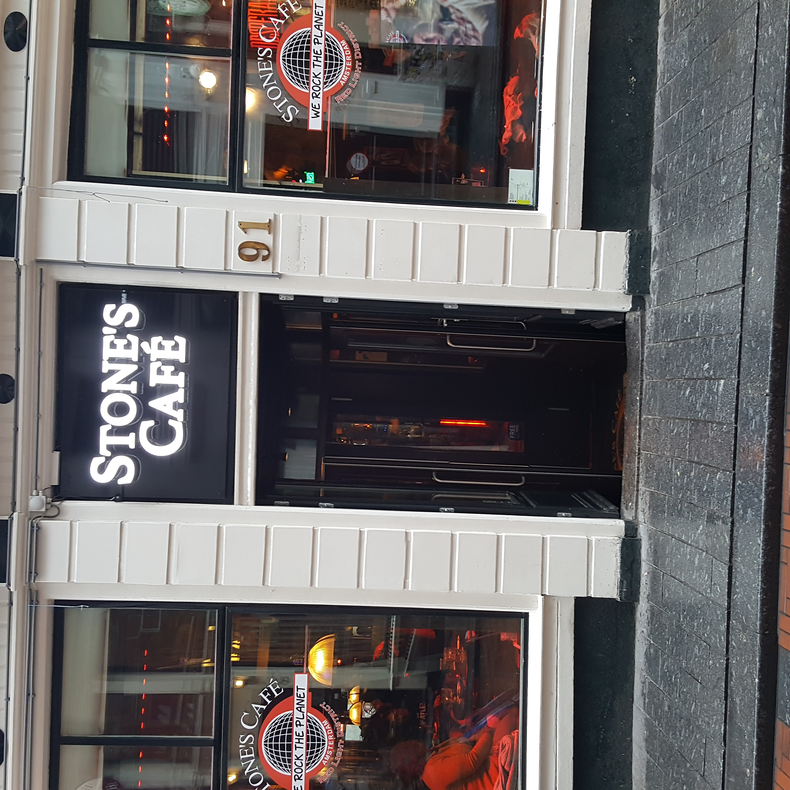
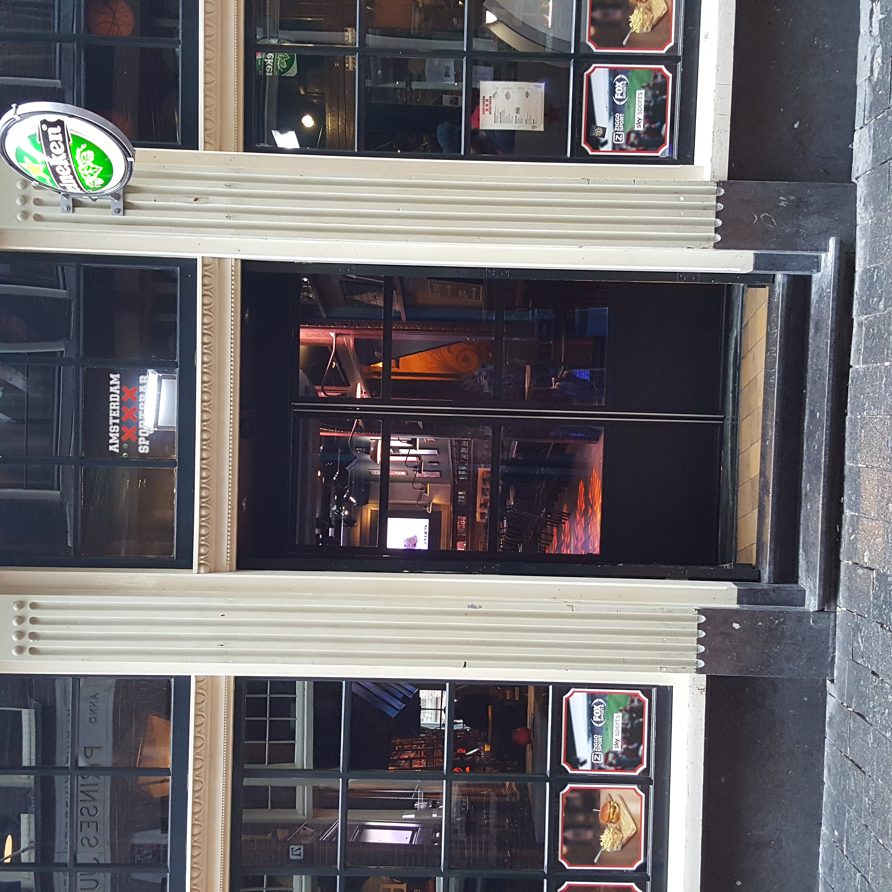
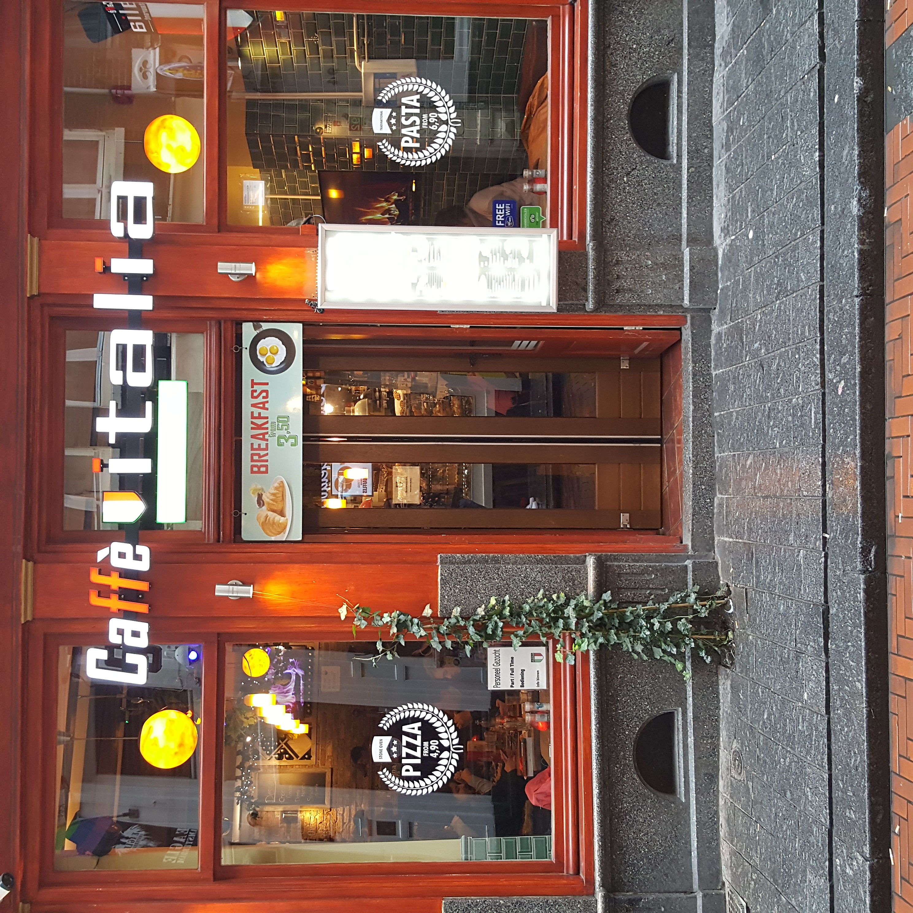

This is a popular Cafe among students where there is always a living room vibe, where you can enjoy sharply priced Beers and delicious Cocktails!
0.7 miles from your location!
A Belgian Cafe with delicious Belgian Beers in the middle of the City!
2 miles from your location!
Kapershoek Cafe is the oldest Cafe in Amsterdam and is known for its delicious brown Beers and fresh snacks, that you can enjoy on the canal!
5 miles from your location!
Italia! one of the most famous brown Cafes in Amsterdam a true classic where you can enjoy exclusive Beers.
8 miles from your location!
submit your Hotspot here to make this App even better!